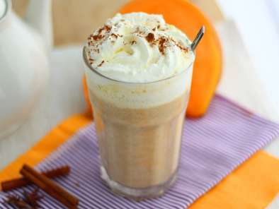

Pumpkin Spice Latte

Ingredientes
Para 2 cafes:
- 300ml de leche
- 80ml de cafe
- 2 cdas de pure de calabaza
Para el pure de calabaza:
- 300g de calabaza
- mantequilla
- 2 cdas de azucar
- 1 cdita de canela
- 0.5 cdita de jengibre en polvo
- 0.5 cdita de nuez moscada
Preparacion
-
Para el puré de calabaza:
Pelar y cortar la calabaza en dados. Saltear en una cacerola con mantequilla. Cubrir y dejar cocinar 20 min a fuego medio.
-
Después de la cocción, añadir el azúcar + canela + nuez moscada + jengibre. Triturar todo finamente.
-
Para los cafés:
calentar la leche en una cacerola. Añadir 2 cucharadas del puré de calabaza. Mezclar bien con las varillas.
-
Añadir el café y dejar calentar sin hervir.
-
Servir en una gran taza o vaso alto. Cubrir con nata montada y espolvorear canela en polvo.